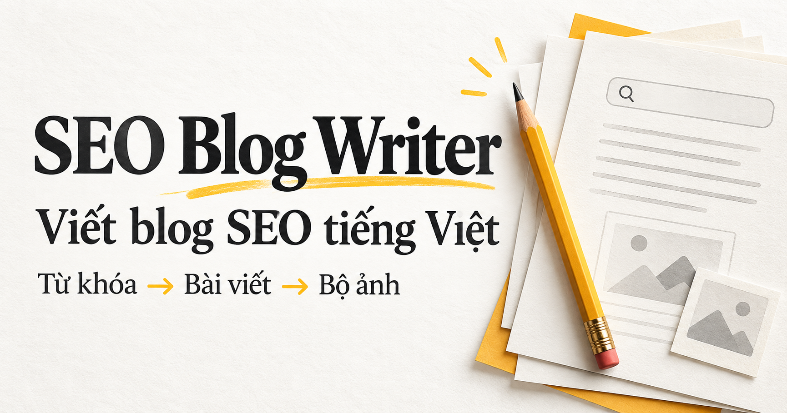

Bạn duyệt từng bước
Phù hợp khi muốn kiểm soát tiêu đề và dàn ý.
Skill cho người viết nội dung
Viết blog SEO tiếng Việt, tạo bộ ảnh minh họa và chuẩn bị bản nháp với ChatGPT.

Dành cho người làm content, marketing và chủ website tiếng Việt.
Bạn chọn tiêu đề, duyệt dàn ý, rồi để ChatGPT đi tiếp từng bước. Có thể yêu cầu làm tự động.
Tìm nguồn liên quan, hiểu ý định tìm kiếm và đề xuất 10 tiêu đề.
Mặc định 9 mục nội dung. Viết, ghép và biên tập để giữ giọng văn thống nhất.
Tạo bộ ảnh bằng ChatGPT, kiểm tra nội dung, nguồn, từ khóa và liên kết.
Nhận file bài viết. Có thể tạo bản nháp WordPress khi đã kết nối website.
Số mục, độ dài, số ảnh và phong cách đều có thể điều chỉnh. Skill không hứa hẹn thứ hạng tìm kiếm.
Mở skill trong ChatGPT, sao chép một mẫu bên dưới và thay chủ đề bằng từ khóa của bạn.
Nếu liên kết skill yêu cầu đăng nhập hoặc chưa dùng được với tài khoản của bạn, đọc và sao chép hướng dẫn đầy đủ vào ChatGPT. Các chức năng phụ thuộc công cụ có sẵn trong phiên.
Phù hợp khi muốn kiểm soát tiêu đề và dàn ý.
Phù hợp khi đã biết rõ bài viết cần những gì.
Đây là trang giới thiệu và hướng dẫn sử dụng SEO Blog Writer. Việc nghiên cứu, viết bài và tạo ảnh diễn ra trong ChatGPT sau khi bạn mở skill hoặc cung cấp hướng dẫn.
Bạn cần tài khoản ChatGPT và các công cụ phù hợp trong phiên: tìm kiếm web để nghiên cứu, tạo ảnh để làm bộ ảnh và công cụ file để xuất bài. Khả năng thực thi tùy tài khoản và công cụ thực tế. Trang này không yêu cầu bạn nhập khóa API.
Có. Bạn vẫn nhận bản thảo và các file, ảnh đã tạo được. Bước WordPress chỉ thực hiện khi bạn chỉ định website và có quyền truy cập phù hợp.
Bước WordPress mặc định tạo bản nháp. Chỉ đăng công khai khi bạn yêu cầu. Không nhập mật khẩu hoặc khóa API vào trang giới thiệu này.
Có. Hãy ghi rõ độ dài, số mục, số ảnh và phong cách mong muốn trong yêu cầu. Mặc định bài có 9 mục nội dung và một ảnh cho mỗi mục; ảnh bìa chỉ thêm khi được yêu cầu.
Toàn bộ quy trình và tài nguyên nằm trong repo GitHub.